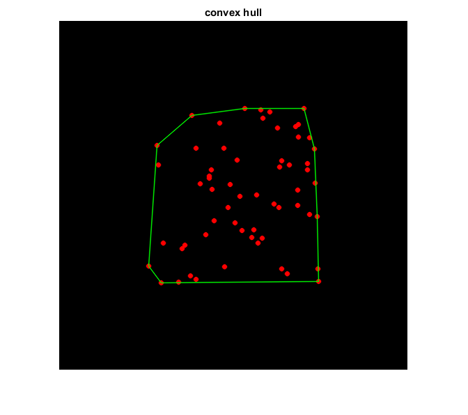

Convex Hull
This sample program demonstrates the use of the cv.convexHull function.
Sources:
Contents
Points
% create black image img = zeros([500 500 3], 'uint8'); [h,w,~] = size(img); % random 2D points count = randi([10 100]); points = [randi(fix([w w*3]/4), [count 1]) randi(fix([h h*3]/4), [count 1])];
Convex Hull
% compute convex hull hull = cv.convexHull(points, 'ReturnPoints',false); hull = hull + 1; % convert 0-based to 1-based indexing
Result
% draw points for i=1:count img = cv.circle(img, points(i,:), 3, ... 'Color',[255 0 0], 'Thickness','Filled', 'LineType','AA'); end % draw convex hull %{ pts = points(hull([1:end 1]),:); img = cv.polylines(img, {pts}, ... 'Color',[0 255 0], 'Thickness',1, 'LineType','AA'); %} pt1 = points(hull(end),:); for i=1:numel(hull) pt2 = points(hull(i),:); img = cv.line(img, pt1, pt2, ... 'Color',[0 255 0], 'Thickness',1, 'LineType','AA'); pt1 = pt2; end % show output imshow(img), title('convex hull')